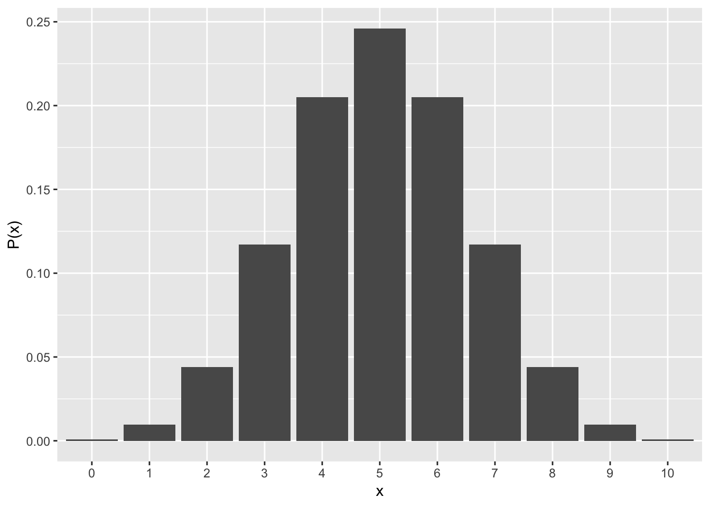
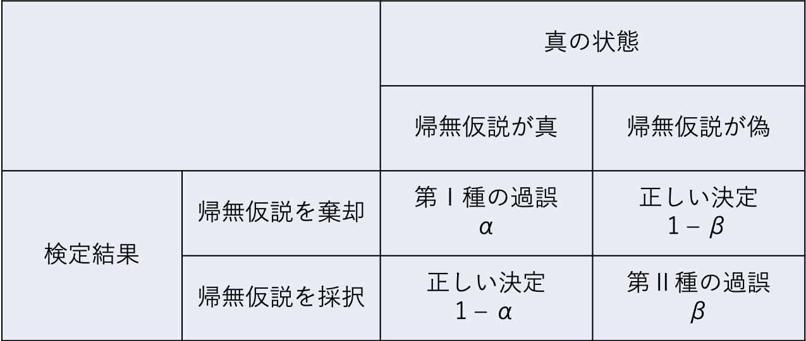

Chapter 5 統計的帰無仮説検定
統計的帰無仮説検定の考え方について理解する。
* 統計的帰無仮説検定の考え方（p値とは何か？）
* 第1種の過誤と第2種の過誤
* 多重検定
今回もtidyverseパッケージを使う。予めインストールの上，ロードをしておく。
install.packages("tidyverse")
library(tidyverse)5.1 統計的帰無仮説検定の考え方
以降では，前回学んだ二項分布を用いた統計的帰無仮説検定（二項検定）を例としながら，統計的帰無仮説検定の考え方について理解していく。
5.1.1 二項分布の復習
コインを10回投げて表が出た回数Xをカウントしていく。”理論的”には，Xは，コインを投げる回数nと表が出る確率qをパラメータとする二項分布に従う。
\[ \begin{equation} P(x) = {}_n\mathrm{C}_xq^{x}(1-q)^{(n-x)}\\ x \sim Binomial(n, q) \end{equation} \]
plot <- data.frame(x=0:10, p=dbinom(x=0:10, size=10, prob=0.5))
ggplot(data=plot, aes(x=factor(x), y=p)) + geom_bar(stat="identity") + ylab("P(x)") + xlab("x")
5.1.2 統計的帰無仮説検定
”理論的には”，表が出る回数Xは上の図のようになる（平均は\(nq = 10*0.5\) = 5回）。
では，実際にコインを10回投げて表が出る回数をカウントしみたところ，表が2回しか出なかった。
この実験結果から，「このコインには歪みがあって，片一方の面だけが出やすい」と言ってもよいのか？
これを検討するために，表と裏それぞれが出る確率が等しいコインを投げる場合（すなわち，\(q=0.5\)）との比較を行い，今回の実験結果がどれくらいまれな事象と言えるのかを比較する。
このとき，研究者が検証したい仮説を対立仮説（alternative hypothesis），対立仮説を検証するために比較の対象とする「偏りを仮定しない」仮説のことを帰無仮説(null hypothesis)という。
では，今回の帰無仮説となる\(Binomial(n=10, q=0.5)\)の分布を見てみよう。理論的には，表がx回出る確率pは，それぞれ以下のようになる。
d = data.frame(x=0:10, q=dbinom(x=0:10, size=10, prob=0.5))
d## x q
## 1 0 0.0009765625
## 2 1 0.0097656250
## 3 2 0.0439453125
## 4 3 0.1171875000
## 5 4 0.2050781250
## 6 5 0.2460937500
## 7 6 0.2050781250
## 8 7 0.1171875000
## 9 8 0.0439453125
## 10 9 0.0097656250
## 11 10 0.0009765625表もしくは裏が出る回数が2回以下の場合の確率を計算すると，
round(d$q[1] + d$q[2] + d$q[3] + d$q[9] + d$q[10] + d$q[11], 2)## [1] 0.11となる。このことから，「フェアなコインを投げたら片一方の面だけが出る回数が2回以下の確率は 0.11 だ。こんなことはめったに起こらないから，このコインは歪んでいて片面だけが出やすい」と結論づけてよいのだろうか？
- 「帰無仮説の前提のもとで，今回の結果が得られる確率」のことをp値（ピーち）と呼ぶ。
- つまるところ，上述の問題は「\(p = 0.11\) は非常に小さい確率と評価してもよいのか」という問題である。「p値を小さい，もしくは大きい」と評価する基準となる確率を有意水準という。
- 一般的に有意水準には0.05（5%）が使われる。なお，5％を基準とすることについては特に明確な根拠はない（研究の世界で合意されているからという以上の理由はない）。
帰無仮説（フェアなコインを投げる）の前提のもとでは，表が出る回数が2回以下の確率は 0.11 であり，5％より大きかった。すなわち，このコインはゆがんでいると結論付ける訳にはいかない，ということになる。
- ちなみに，今回のように「コインが表か裏かに関わらず，一方の面だけが出やすい」という対立仮説を検討する場合の検定は，両側検定という。仮に，今回の仮説で表と裏を区別するとして「表が出にくい」つまり「表が出る回数が2回以下の確率」を対象とする場合，このような検定を片側検定という。二項分布は左右対称の分布なので，両側p値は片側p値の2倍の値である(厳密には左右対称ではないのであくまで近似値)。多くの場合，両側検定を使うのが一般的。
Rならば，二項検定はbinom.test()で出来る。
#alternative = c("two.sided")は，両側検定をするためのオプション。alternativeを指定しなければ，出てくる結果はデフォルトで両側検定になる。
binom.test(x = 2, n = 10, p = 0.5, alternative = c("two.sided"))##
## Exact binomial test
##
## data: 2 and 10
## number of successes = 2, number of trials = 10, p-value = 0.1094
## alternative hypothesis: true probability of success is not equal to 0.5
## 95 percent confidence interval:
## 0.02521073 0.55609546
## sample estimates:
## probability of success
## 0.2#alternative = c("less")は，片側検定をするためのオプション。2/10よりも低い確率を求めよということ。
binom.test(x = 2, n = 10, p = 0.5, alternative = c("less"))##
## Exact binomial test
##
## data: 2 and 10
## number of successes = 2, number of trials = 10, p-value = 0.05469
## alternative hypothesis: true probability of success is less than 0.5
## 95 percent confidence interval:
## 0.0000000 0.5069013
## sample estimates:
## probability of success
## 0.22集団間の平均値の比較（t検定など）も，基本的に同じような考え方である。平均値に差がないと仮定したときの理論分布と比べて，実際に得られた値がどれくらい珍しいのかを検討する。
5.2 第1種の過誤と第2種の過誤
「帰無仮説が真なのに，帰無仮説を棄却してしまう誤り」のことを，第1種の過誤（type Ⅰ error）という。
* 本当は差がないのに，”差がある”と判断してしまう誤り。
* 第1種の過誤を犯す確率を\(\alpha\)と表現する。
* \(\alpha\)は有意水準の値そのものである（\(\alpha=0.05\)）。
「帰無仮説が偽なのに，帰無仮説を採択してしまう」誤りのことを，第2種の過誤（type Ⅱ error）という。
* 本当は差があるのに，”差がない”と判断してしまう誤り。
* 第2種の過誤を犯す確率を\(\beta\)と表現する。
「帰無仮説が偽であるときに，正しく帰無仮説を棄却する確率」のことを”検定力”という。
* 差があるときに，”差がある”と正しく判断できる確率。
* 検定力は\(1 - \beta\)で求められる（全体の確率から第２種の過誤を犯す確率を引いたもの）。
表1

\(\alpha\)と\(\beta\)はトレード・オフの関係にある。第Ⅰ種のエラーを避けようと思い有意水準を小さくすれば（例えば\(\alpha=0.001\)とするなど），帰無仮説の棄却が厳しくなり，逆に第Ⅱ種のエラーを犯してしまう確率も高くなる（帰無仮説が偽であるにもかかわらず，棄却しない）。
5.3 統計的帰無検定の問題
5.3.1 p値
p値は標本数に依存する。標本数が多くなるほどp値は小さくなる。
例えば先程のコイン投げの例で，100回コインを投げて20回表が出た場合で（表が出る確率は0.2で先程の例と等しい），「フェアなコインと比べてこのコインはゆがんでいるか」を検討する。
binom.test(x = 20, n = 100, p = 0.5, alternative = c("two.sided"))##
## Exact binomial test
##
## data: 20 and 100
## number of successes = 20, number of trials = 100, p-value =
## 1.116e-09
## alternative hypothesis: true probability of success is not equal to 0.5
## 95 percent confidence interval:
## 0.1266556 0.2918427
## sample estimates:
## probability of success
## 0.2そこで，p値ではなく，差の大きさそのものを表す指標である”効果量”というものが扱われている（詳しくは次回）。
5.3.2 多重比較の問題（＊）
統計的検定を繰り返すと，有意な結果が生じる確率が増える。例えば，5%水準で10回検定を行えば，少なくとも1回は帰無仮説を誤って棄却してしまう確率が0.4 になる。
#全ての確率から，「10回検定を行って全て正しい判断を行う」確率を差し引いたものが，少なくとも1回は誤った判断をしてしまう確率
1 - (1 - 0.05)^10## [1] 0.4012631このように複数回検定を行うことを多重比較という。有意な結果が出やすくなってしまうので，p値を調整する必要がある。
有名な多重比較補正は，ボンフェローニの補正である。10回検定を行うので，有意水準を元の0.05から0.05/10を基準とするといったかたちで調整する。
0.05/10 #つまり，p < 0.005でなければ「有意である」と結論しないという保守的な立場を取る## [1] 0.005練習問題
問１
以下について，説明できるようにしておく。
- 「帰無仮説」とはなにか？
- 「p値」とはなにか？
- 「第Ⅰ種の過誤」と「第Ⅱ種の過誤」とはなにか？
問２
コインを100回投げて、表が51回出た。有意水準を5%として統計的仮説検定をした場合，「このコインは歪みがない」という結論を出せるか？
コインを10,000回投げて、表が5,100回出た。有意水準を5%として統計的仮説検定をした場合，「このコインは歪みがない」という結論を出せるか？